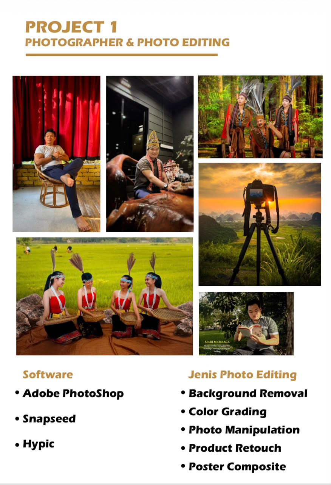
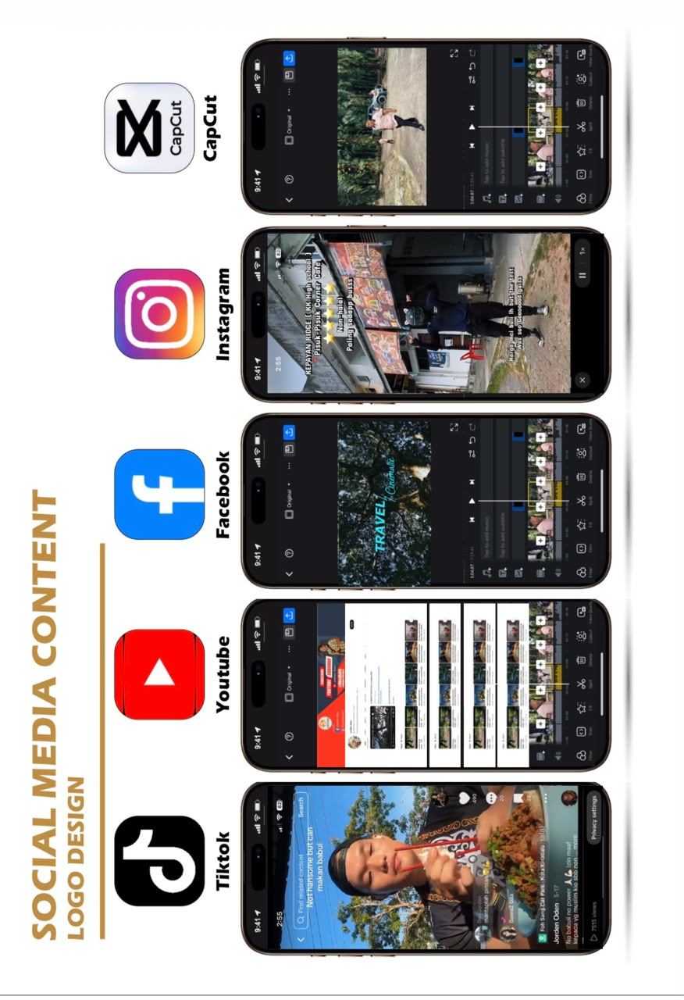
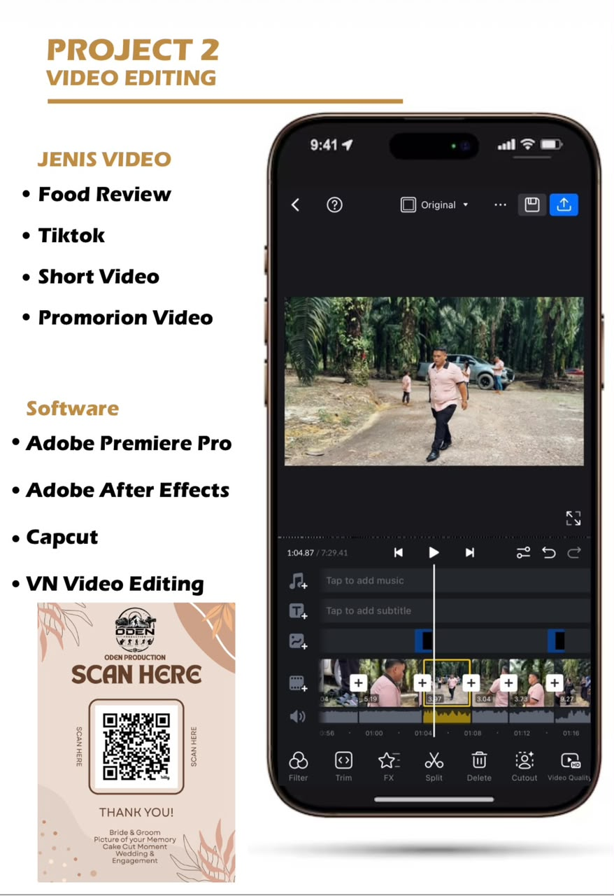

01 / FOTOGRAFI
Fotografi & Photo Editing
Background removal, color grading, photo manipulation dan product retouching.
PORTFOLIO PROFESIONAL · KOTA KINABALU, SABAH
Saya Jorden Siew — Graphic Designer, Videographer dan Content Creator yang menghasilkan reka bentuk, video dan kandungan digital untuk promosi serta pemasaran.
PROFIL RINGKAS
Saya mempunyai pengalaman dalam reka bentuk grafik, penyuntingan video, motion graphics, content creation dan pemasaran media sosial. Saya mengutamakan komunikasi yang baik, ketelitian serta penyiapan kerja mengikut masa.
HASIL KERJA & PERKHIDMATAN
Contoh kategori projek berdasarkan portfolio yang diberikan.

Background removal, color grading, photo manipulation dan product retouching.
Food review, TikTok, video pendek dan video promosi. Tekan butang main untuk menonton video portfolio.

Reka bentuk kandungan untuk TikTok, YouTube, Facebook, Instagram dan platform digital.

Contoh paparan proses suntingan, penyusunan klip, muzik dan sari kata.
Imej dan video di atas dimasukkan daripada bahan yang dimuat naik. Untuk menggantikan bahan, tukar fail di dalam folder assets dengan nama fail yang sama.
UNTUK SEMAKAN PANEL INTERVIEW
Dokumen portfolio rasmi untuk rujukan dan semakan panel interview. Panel boleh menyemak semua 15 halaman terus di bawah atau membuka PDF dalam tab baharu.
Dokumen disertakan bersama laman web. Untuk perkongsian dalam talian, muat naik keseluruhan folder laman web termasuk folder assets.
KEBOLEHAN
Adobe Illustrator · Photoshop · Premiere Pro · After Effects · Canva · CapCut · VN · CorelDRAW
Social media design · Content planning · Branding · Advertising · Photography · Videography
Microsoft Word · Excel · PowerPoint · Basic computer troubleshooting · Pengetahuan teknikal mesin fotokopi
PENGALAMAN & KELAYAKAN
Syarikat Tekad Jaya · Penampang Bundusan
Miki Embroidery · Kepayan
AA Stationery · Penampang
Gym · Kota Kinabalu
SM La Salle, Tanjung Aru
Bahasa Melayu C · Bahasa Inggeris E · Pendidikan Moral C · Sejarah C+ · Matematik B · Sains B · Perdagangan D
Pencapaian: BEST STUDENT in JPSM Tahap 2 & Tahap 3.
Dokumen asal: Buka portfolio, CV/resume dan sijil PDF yang anda sediakan.
MAKLUMAT PERIBADI
Maklumat ringkas untuk tujuan permohonan kerja.
Cadangan privasi: untuk laman web awam, elakkan memaparkan alamat rumah penuh. Alamat penuh boleh diberikan terus kepada majikan apabila diperlukan.
PELUANG KERJAYA
Saya terbuka untuk berbincang tentang jawatan, projek kreatif atau peluang kerjasama yang sesuai. Hubungi saya melalui WhatsApp atau e-mel untuk menetapkan masa temuduga.
Kreativiti bukan sekadar mencantikkan visual — ia membantu menyampaikan mesej dengan lebih jelas.
JORDEN SIEW / CREATIVE PROFESSIONALMARI BERHUBUNG
Hubungi saya untuk interview, pertanyaan kerja atau kolaborasi.